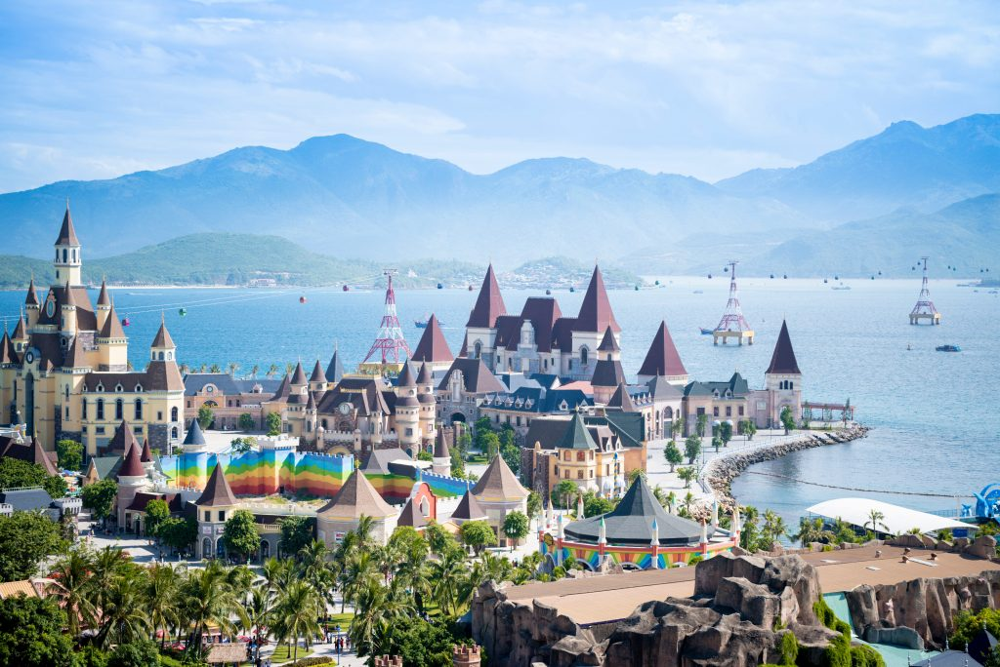

Yêu thích nét thơ mộng nơi đây.
Có thể nói, chơi ván bay nước – hay còn gọi là Fly-board là một trong những trải nghiệm độc đáo ở Nha Trang. Sử dụng động cơ ép nước áp lực siêu mạnh để có thể đẩy được người chơi lên không trung, tầm độ cao 6-9m. Tất nhiên, chúng sẽ có thiết bị điều khiển cột nước. Và thậm chí là hướng bay để bạn có thể thực sự “bay lượn” và nhào lộn dưới nước hoặc trên không trung.
Trò chơi mạo hiểm
Ngoài Bà Nà Hills với loạt trải nghiệm độc đáo, ngỡ như lạc vào thế giới cổ tích, nức tiếng gần xa . Thì Đà Nẵng cũng mang tới trải nghiệm một môn thể thao cũng mạo hiểm hấp dẫn không kém là cano kéo dù nước. Dù bay nương theo sức gió để vận hành nên từ trên độ cao lơ lửng 70 – 100m
Bà Nà Hills
Nhắc đến Vũng Tàu, ai cũng chỉ nghĩ đến biển và những món hải sản tươi ngon. Nhưng có một cách giúp bạn cảm nhận Vũng Tàu trọn vẹn hơn, đảm bảo bạn sẽ đắm chìm trong khung cảnh của thành phố biển xinh đẹp đó chính là đi cáp treo lên đỉnh Hồ Mây. Sau đó, bạn sẽ ấn tượng với khung cảnh thiên nhiên. Gồm thác nước cao 9m, rừng sinh thái bao quanh hơn 50ha.
Hồ mây